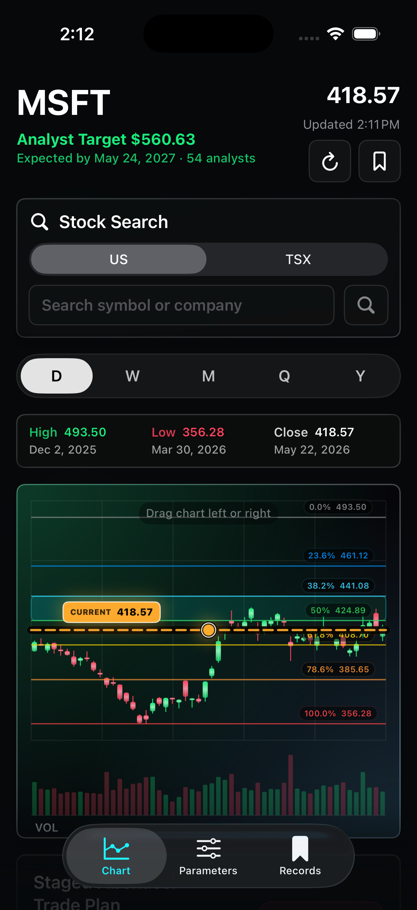
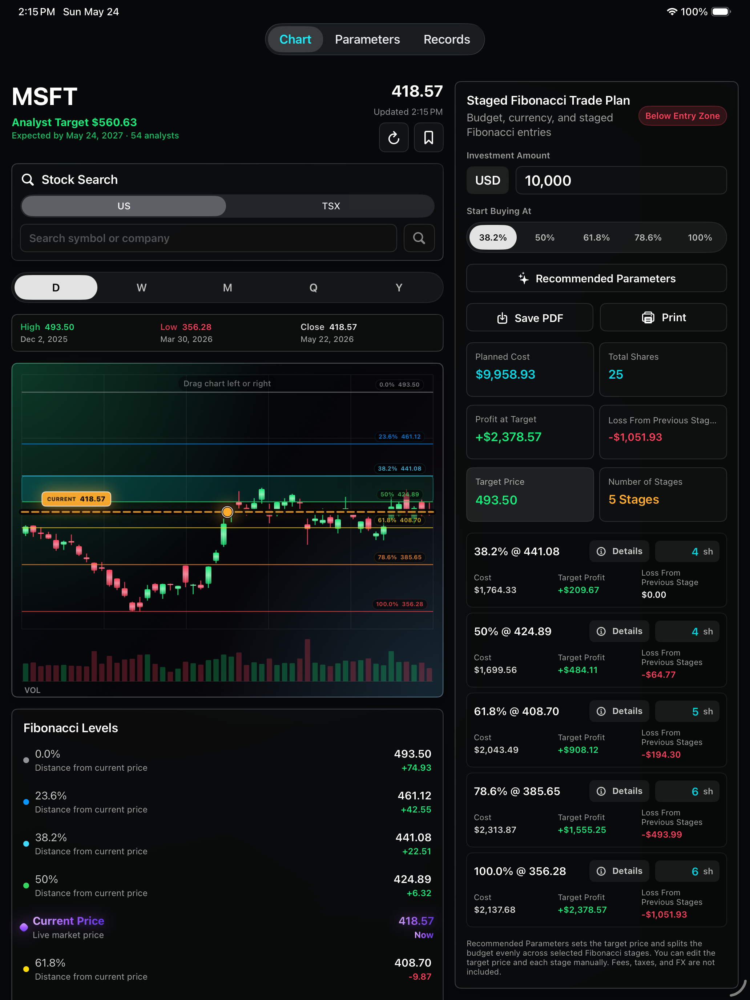
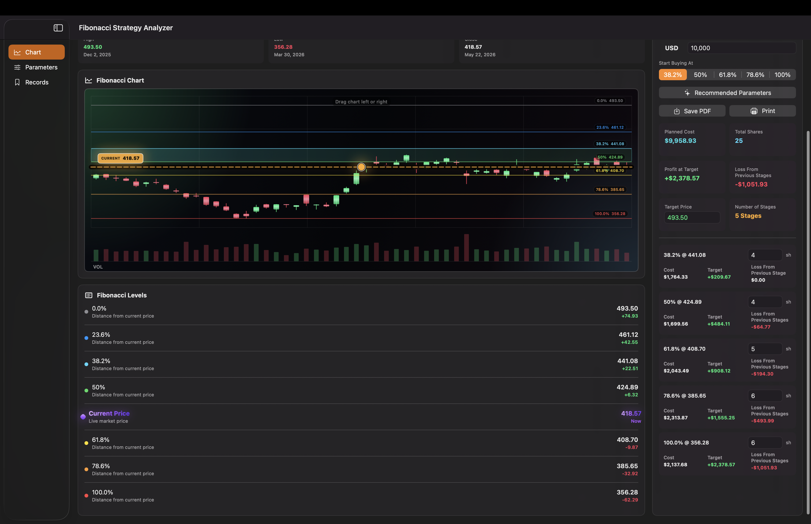
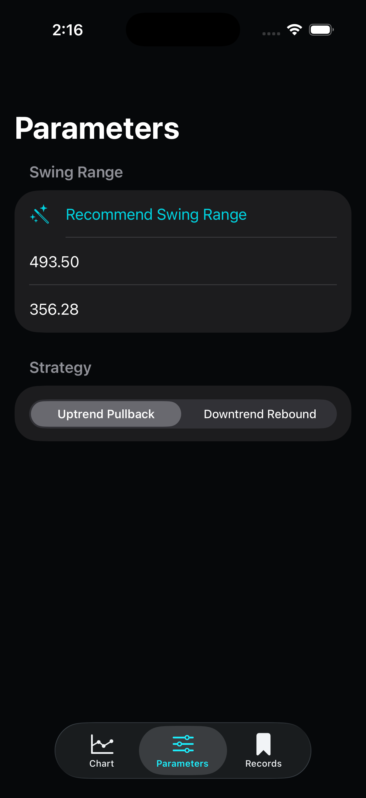
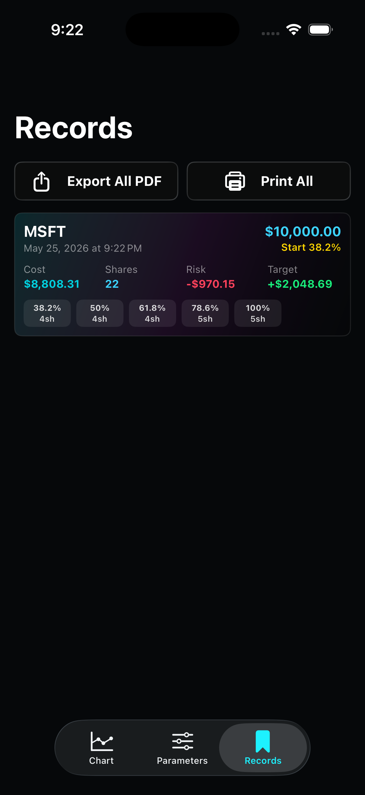

Fibonacci Levels
Compare the current market price against key retracement levels and quickly see how far each stage is from the live price.
Trading workflow companion
Plan staged stock entries with Fibonacci retracement levels, live market data, risk checks, and exportable strategy reports.

What it helps with
Compare the current market price against key retracement levels and quickly see how far each stage is from the live price.
Split your investment amount across selected Fibonacci stages and review estimated shares, cost, target profit, and downside checks.
Search a ticker, load recent candles, and use the latest close as the current price for a more practical plan.
Save strategy setups for later review, then export or print PDF reports for your own notes or discussions.
Across devices
On iPad, the chart, Fibonacci Levels, and staged trade plan can be reviewed with more context on screen. This is useful when you want to compare level prices, planned shares, target profit, and risk checks without constantly scrolling.

On Mac, the sidebar keeps Chart, Parameters, and Records visible while the main workspace gives the candlestick chart more horizontal space. It is better for longer review sessions, report preparation, and comparing setup details before saving.

Detailed walkthrough
Start in the chart screen. Type a stock symbol, choose the market, and run the search. After the data loads, confirm that Current Price, Close, and the candlestick chart are populated.
Fibonacci levels are only as useful as the price range you choose. Use a clear recent swing high and swing low from the timeframe you are analyzing.
Level Price = High - (High - Low) × Retracement%
For rebound analysis, the app measures upward from the low: Low + (High - Low) × Retracement%.

The chart shows price movement, Fibonacci bands, and the current price line. The Fibonacci Levels list gives the exact level prices and the distance from the live price.
Enter the investment amount, choose the first Fibonacci level where buying should start, and review the recommended shares for each stage.
Per-stage budget = Investment ÷ Number of selected stages
Shares = floor(Per-stage budget ÷ Stage price)
Remaining cash is assigned to the cheapest selected stages when possible.
When the plan looks right, save it to Records. You can revisit saved setups later, compare them, or export a PDF report for your notes.

Contact info
Send an email for support, feedback, or questions about using Fibonacci Strategy Analyzer.